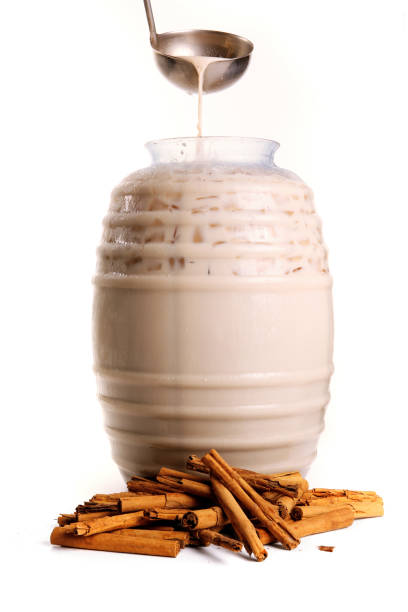

Horchata

Description
I found this Horchata recipe a long time ago and and has become my go to.
Sadly I don't remember where I found it as it's a combination of a few different recipes from the past
Ingredients
- 2 Cups of Jasmine Rice
- 4 Cups of Hot Water
- 1/4 Teaspoon Vanilla Extract
- 2 Cinammon Sticks
- 2 Cups of Milk
- 1 Can Sweetened Condensed Milk
- Bucket to hold 4 Cups of Water
Steps
- Add Rice and Water into bucket and let soak over night. Minimum 8 hours.
- Following the soak, add all ingredients into a blender
- Once properly blended, strain into a pitcher
- Add 2-3 cups of water depending on your taste
Enjoy!